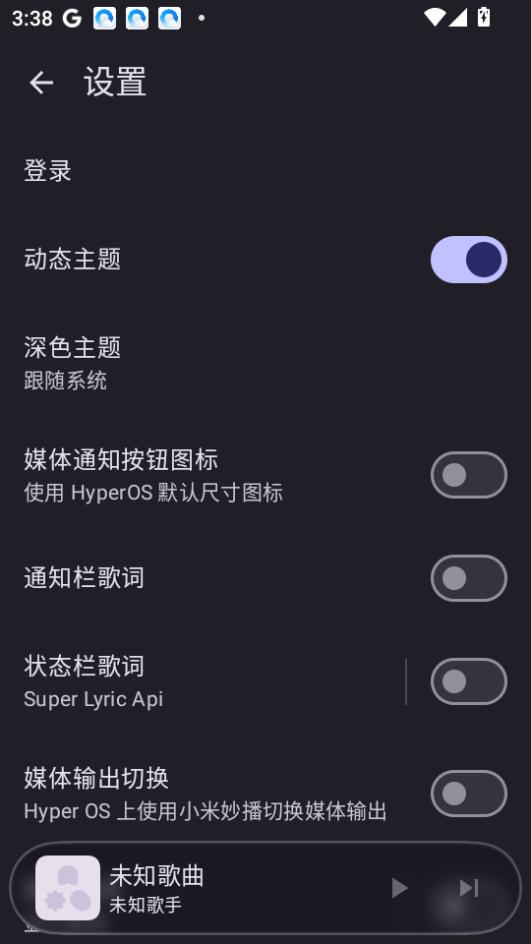

3.79MB 的网易云客户端 kanade，从匿名项目到 v1.3 的进化路
kanade 这个只有三个权限、安装包不足 4MB 的开源网易云客户端，在 v1.3 终于补上了动态主题和深色跟随。回顾它的迭代节奏，能看到一个开发者如何在"极简"和"好用"之间找平衡。
现在这版：v1.3 终于把颜色做好了
我最近重新打开 kanade，是被朋友截的一张图晃到的——界面顶栏的颜色跟着正在播放的专辑封面在变，紫色封面就是紫色渐变，绿色封面就换成翠绿，切歌的时候还有个平滑的过渡动画。
之前我印象里的 kanade 是个"能用就行"的纯工具，界面是固定的暗色，按钮文字小得像 terminal。v1.3 不一样了，打开设置页最顶一行就是"动态主题"开关，往下是"深色主题跟随系统"——这两个开关加起来，把界面的视觉灵活性一下拉开了。

有意思的是，动态主题只改高亮色和强调色（顶栏、按钮、进度条），整体明暗还是由系统的深/浅模式决定。我把系统切浅色，kanade 跟着变浅；系统回深色，它也深色——不会出现"其他应用都是浅色，只有 kanade 深色"的割裂感。
它的官网上写得很清楚——这是一个只有 3.79MB 的开源客户端，把视觉体验磨到这个地步，反而让我好奇：它之前长什么样？它是怎么走到今天这一步的？
来路：样本文档没提的早期版本
我翻了翻手头的kanade文档资料，全都是 v1.3 的——安装步骤写的是 kanade_v1.3.apk，MD5 校验值对应 v1.3，解析包错误排查里反复出现"3.79MB"这个数字。样本文档只字没提早于 v1.3 的版本。
这件事本身就是一个线索：一个开源项目在 v1.3 才第一次有了像样的文档。说明它的前几个版本都是极度个人化的"自用工具"——可能没有发布渠道、可能只有 GitHub 上零星的 release note、可能连 README 都是几句干巴巴的介绍。直到 v1.3 才把官方下载的入口做起来，第一次让非开发者也能轻松获取安装包。
从开发者的署名风格和代码命名来看（包名 com.rcmiku.kanade，开源仓库维护者是一位匿名开发者），这很可能是一个典型的"做给自己用，然后不小心被别人发现了"的项目。早期版本追求的只有一件事：用最少的代码把网易云的核心功能跑起来。
这条路线一直延续到 v1.3。证据是 kanade 的权限模型——哪怕是最新版，也只申请了三个权限：网络访问、外部存储读写、通知。没有位置、没有相机、没有麦克风、没有通讯录、没有剪贴板。在这个每个 App 都想把能摸到的权限全摸一遍的年代，kanade 这种"权限极简"不是保守，是一种贯穿始终的产品哲学。

关键转折：什么时候从"能用"到"好用"
我没法精确说出 v1.0 到 v1.3 之间经历了多少小版本迭代——样本文档没给 changelog。但从 v1.3 的成品反推，可以看到几个明确的转折点：
第一个转折点是离线能力的选择性支持。存储权限在 v1.3 是可选的——不给也能在线听歌，只是不能扫本地文件、不能缓存。这不是技术限制，是产品决策：开发者明确说了"如果你只用网易云在线曲库，不给存储权限完全不影响"。很多音乐 App 把离线缓存当核心卖点强制申请存储权限，kanade 反其道而行之，把离线做成了一个"可选插件"。
第二个转折点是主题系统。v1.3 同时放出了"深色跟随系统"和"动态主题"，而且两个独立开关可以自由组合——这说明之前的版本要么只有深色要么只有浅色，主题系统是 v1.3 一次性重构出来的。这个改动量不小：从封面图提取主色调需要图像处理库（虽然 Android 系统自带 Palette，但集成进去、处理好过渡动画、跟深浅模式联动，还是要写不少代码）。
第三个转折点是文档的出现。v1.3 对应的文档站写得相当细致——解析包错误的四种原因、MD5 校验、安装四步流程、权限说明、主题设置详解，甚至连"为什么没有其他权限"都专门写了一节。对比很多开源项目"release note 就是一句 bug fix"，kanade 在 v1.3 突然把文档做起来，说明它的定位开始从"自用"转向"社区可用"。
迭代节奏里藏着什么优先级
从 v1.3 的成品往回看，能看出开发者在"死磕什么"和"什么一直不管"之间画了一条非常清晰的线。
一直在死磕的：轻量、独立、视觉。
- 轻量：3.79MB 的安装包，一般同功能的网易云客户端都在 30MB 以上。这个数字背后是 APK 体积的极致压缩——可能用了代码混淆、可能剔除了 AndroidX 里用不到的组件、可能把一些 UI 资源动态加载了。不管怎么做的，3.79MB 本身就是一个对"臃肿"的宣战书。
- 独立：三个权限里没有任何社交相关的、没有任何位置相关的、甚至连"剪贴板读取"这种常见的小功能都不做（它明确说了不做"从剪贴板识别链接打开"）。这不是因为功能难做，是因为"独立"本身就是目标——一个不采集、不上传、不跟踪的播放器。
- 视觉：动态主题 + 深色跟随系统这一对放在 v1.3 才一起上，说明它憋了至少一两个版本。开发者不是没考虑过做主题，是一直在等"能做好"的时机——可能是等 Android 版本的 API 足够稳定（跟随系统深色模式是 Android 10 才正式支持的），可能是等 Palette 提取颜色的算法调好。
一直不管的：社交、下载管理的深度、播放行为的自动优化。
- 没有听歌识曲功能（不申请麦克风）。
- 没有扫码登录（不申请相机，只用账号密码）。
- 下载的歌曲是缓存性质的，没有完整的下载管理器（进度条、断点续传、批量下载这些都没做）。
- 没有基于位置的推荐（不申请位置权限）。
- 没有自动根据你的播放记录做智能歌单——这个其实不用额外权限，但开发者没做，说明他不想碰"学习用户行为"这件事。
有意思的是，解析包错误的排查文档里专门提了"下载下来删了重下"——这不是开发者不会做下载管理，是他故意把复杂性留给了用户。kanade 的理念大概是：播放器就是播放器，不要做浏览器、不要做社区、不要做助手。
下一步会往哪走
从它的迭代规律推，我觉得不会突然出现一个"大版本"，而是继续在现有框架里磨细节。
动态主题刚加进去，可能下一版会补更多细节——比如封面图颜色提取算法调一下（有些专辑封面是黑白的怎么办）、比如切歌过渡动画的速度可调。深色跟随系统是 v1.3 的新特性，可能下一版会加一个"强制浅色/强制深色"选项作为补充（现在只能跟随系统，想要"其他应用浅色、只有 kanade 深色"的用户暂时做不到）。
离线缓存目前是"给了存储权限就有、不给就没有"——如果开发者想在这个方向上多走一步，可能会加一个简单的缓存管理界面（哪些歌缓存了、占了多少空间、一键清空）。但我猜他不会做复杂的下载列表，因为那跟"轻量"的哲学有点冲突。
不太可能出现的：社交功能、听歌识曲、扫码登录、自动智能推荐——这些都跟 kanade 的产品基因没关系。如果哪天看到 v2.0 加了这些，反而说明开发者换人了，或者项目被 fork 了。
总的来说，kanade 从一个匿名开发者的自用工具走到 v1.3 这个节点，靠的不是"堆功能"，是"砍功能"——砍掉权限、砍掉社交、砍掉冗余的 UI、砍掉学习用户行为的能力。3.79MB 不是一个偶然的数字，是一路从 v1.0 砍过来的结果。
这套资料在GitHub、Gitee、GitCode 三个仓库都能拿到，按国内访问习惯选哪个都行。源码和文档放在一起维护，方便跟进每次迭代的具体改动。